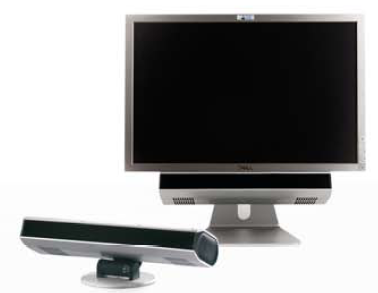
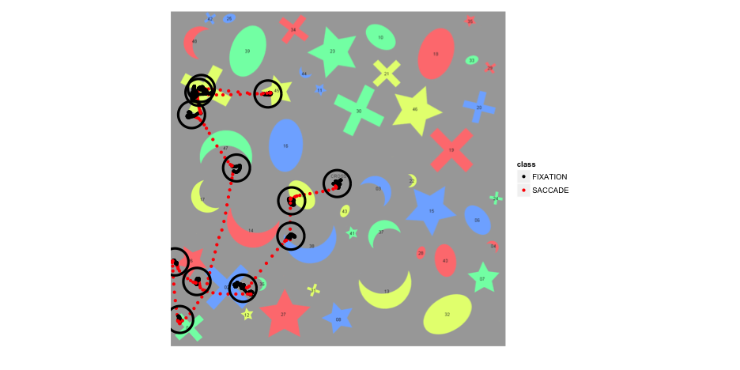
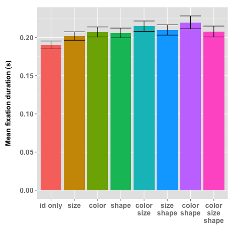
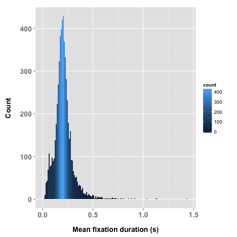

The effect of target specification on objects fixated during visual search
A replication of L.G. Williams' 1967 study
Ryan M. Hope
CogWorks Lab
The Williams' Search Task


Motivation
- ICCM 2010, Dave Kieras shows off improvements to Epic's visual system, uses Williams' search task for test model/data
- CogWorks Lab got 2 awesome new high-speed eyetrackers
- Inform work on lab grants:
- ONR Grant - Extreme Expertise in Cognitive Skill
- DARPA STTR SB12A-004 - Data Visualization
Why the Williams' 1967 study needs replicating
- Eyetracking technology has improved greatly
- Computer algorithms for analyzing eyetracker data
- Other methodological concerns
Corneal Reflex Eye tracking
Purkinje images (reflections) are used in eye tracking technology to locate the orientation of the eye, by comparing the position of the first reflection of a known, fixed, infrared light source with the position of the pupil.

The Williams' 1967 setup

- 1 image every 4 seconds
- each 4 second image contains multiple fixations
- left eye mostly occluded
- no temporal information
- ~1/6 trials not tabulated
- ~29% of tabulated fixations not classified
- search times approximated indirectly
The CogWorks 2012 setup

- 1 sample every 2 milliseconds
- 3% trials dropped (>10% missing data)
- average 0.8% missing data per trial
Classifying Raw Gaze Sample

Velocity Threshold = 30°/s, Acceleration Threshold = 8000°/s²
Tabulating Fixations

Cue: Red, Crescent, Medium, 41
Other experimental differences
Williams 1967
- 5 shapes x 5 colors x 4 sizes
- shapes: semi circle, circle, triangle, cross, square
- sizes: 2.8, 1.9, 1.3, 0.8
- 800 unique cue combinations
- 30 subjects
- 200 trials per subject
- <5000 good trials?
CogWorks 2012
- 4 shapes x 4 colors x 3 sizes
- shapes: crescent, star, cross, oval
- sizes: 1.87, 1.11, .44
- 384 unique cue combinations
- 16 subjects
- 384 trials per subject
- 5939 good trials
- randomized cue order
Breakdowns: 1967 Study
Proportions of fixations (for fixations that landed on objects)
| Bl | Gr | Ye | Or | Pi | V | L | M | S | Ci | Sc | Tr | Sq | Cr | |
|---|---|---|---|---|---|---|---|---|---|---|---|---|---|---|
| Color | 0.61 | 0.56 | 0.59 | 0.71 | 0.6 | |||||||||
| Size | 0.59 | 0.29 | 0.28 | 0.35 | ||||||||||
| Shape | 0.26 | 0.24 | 0.24 | 0.23 | 0.29 | |||||||||
| Color + Size | 0.59 | 0.65 | 0.67 | 0.66 | 0.59 | 0.52 | 0.3 | 0.3 | 0.3 | |||||
| Color + Shape | 0.64 | 0.64 | 0.66 | 0.59 | 0.59 | 0.24 | 0.26 | 0.27 | 0.24 | 0.28 | ||||
| Size + Shape | 0.57 | 0.3 | 0.29 | 0.35 | 0.27 | 0.25 | 0.26 | 0.24 | 0.3 | |||||
| Color + Size + Shape | 0.54 | 0.55 | 0.55 | 0.62 | 0.54 | 0.49 | 0.31 | 0.29 | 0.28 | 0.26 | 0.28 | 0.25 | 0.26 | 0.26 |
Breakdowns: 2012 Study
Proportions of fixations (for fixations that landed on objects)
| Bl | Gr | Re | Ye | L | M | S | Cc | Cx | Ov | St | |
|---|---|---|---|---|---|---|---|---|---|---|---|
| Color | 0.51 | 0.51 | 0.52 | 0.55 | |||||||
| Size | 0.67 | 0.36 | 0.23 | ||||||||
| Shape | 0.39 | 0.37 | 0.38 | 0.34 | |||||||
| Color + Size | 0.50 | 0.51 | 0.47 | 0.48 | 0.67 | 0.37 | 0.22 | ||||
| Color + Shape | 0.49 | 0.47 | 0.53 | 0.48 | 0.39 | 0.36 | 0.39 | 0.35 | |||
| Size + Shape | 0.66 | 0.38 | 0.20 | 0.36 | 0.38 | 0.37 | 0.33 | ||||
| Color + Size + Shape | 0.49 | 0.47 | 0.44 | 0.48 | 0.66 | 0.39 | 0.20 | 0.39 | 0.36 | 0.39 | 0.34 |
Fixation Proportions

Number of Fixations

Fixations / Number of Objects

Refixations

Backtracking

Cue: Cross, 05
Fixation Durations


Error bars are 95% confidence intervals
What Williams found ~50 years ago
- When a person searches for a target in cluttered a visual field, fixations typically fall on objects
- When the search field contains object differing widely in size, color and shape:
- A high proportion of fixations were on objects of specified color
- A moderate proportion of fixations were on objects of specified size or shape
- When two or more target characteristics are specified, fixations were generally based on a single characteristic
What is new in 2012 (so far)
- Size can be a better cue than color
- Refixations are highly prevalent when cue is not useful
- Not all visual processing happens during fixations
- implications for cognitive architectures
Application: Data Visualization

Whats to come?
- Collect data from more subjects in Q1 2013
- Analyze in more detail "backtracking"
- Test Williams' search time predictions
- ACT-R model
References
- Dodge, R., & Cline, T. (1901). The angle velocity of eye movements. Psychological Review.
- Williams, L. G. (1966). A study of visual search using eye movement recordings.
- Williams, L. G. (1967). The effects of target specification on objects fixated during visual search. Acta Psychologica, 27(00), 355–360.
- Williams, L. G. (1968). A study of visual search using eye movement recordings: Validation Studies.
- Kieras, D. (2010). Modeling Visual Search of Displays of Many Objects : The Role of Differential Acuity and Fixation Memory. In D. D. Salvucci & G. Gunzelmann (Eds.), Proceedings of the 10th international conference on cognitive modeling. Philadelphia, PA: Drexel University.
- Nyström, M., & Holmqvist, K. (2010). An adaptive algorithm for fixation, saccade, and glissade detection in eyetracking data. Behavior Research Methods.